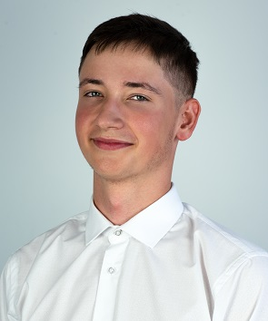

Kontaktné informácie
- xadamko@stuba.sk
- +421000145000
- Malý Šariš 395
Znalosti
Mierne pokročilý
- Java, Python, C++, C
- HTML, CSS
- Sieťové technológie
- SQL, Databázové systémy
Základy
- JavaScript, PHP
- Linux
Jazyky
Stredne pokročilý - B2
- Anglický jazyk
Začiatočník - A2
- Ruský jazyk
Pracovné skúsenosti
Júl 2022 - August 2022 / Technický operátor
- Práca so zameraním na riešenie technických problémov v stanovom mestečku pri príležitosti Veľkej Ceny Rakúska F1. Práca si vyžadovala zopdovedný prístup a technické zručnosti.
Máj 2019 - Jún 2019 / IT oddelenie
- Analýza interných IT problémov, návrh riešení a ich následná aplikácia vo firme.
Dosiahnuté vzdelanie
2021 - Doteraz
- Fakulta elektrotechniky a informatiky / Aplikovaná informatika / Slovenská technická univerzita v Bratislave
2017 - 2021
- Stredná priemyselná škola elektrotechnická v Prešove / 2561 M informačné a sieťové technológie